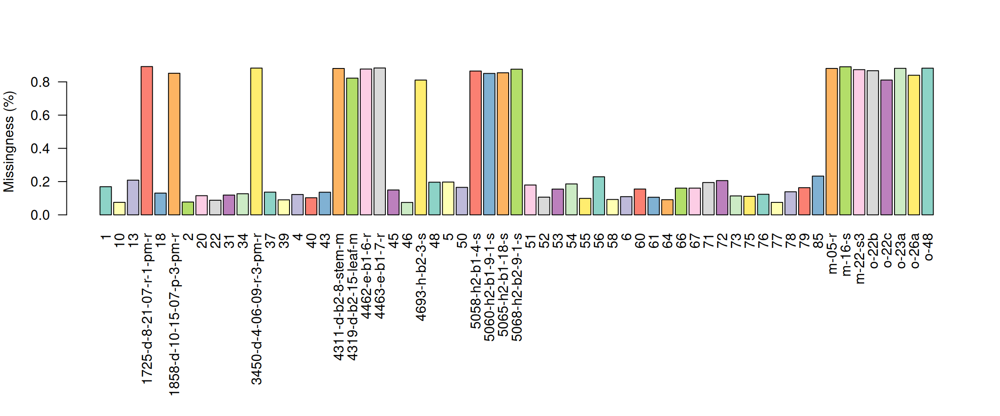
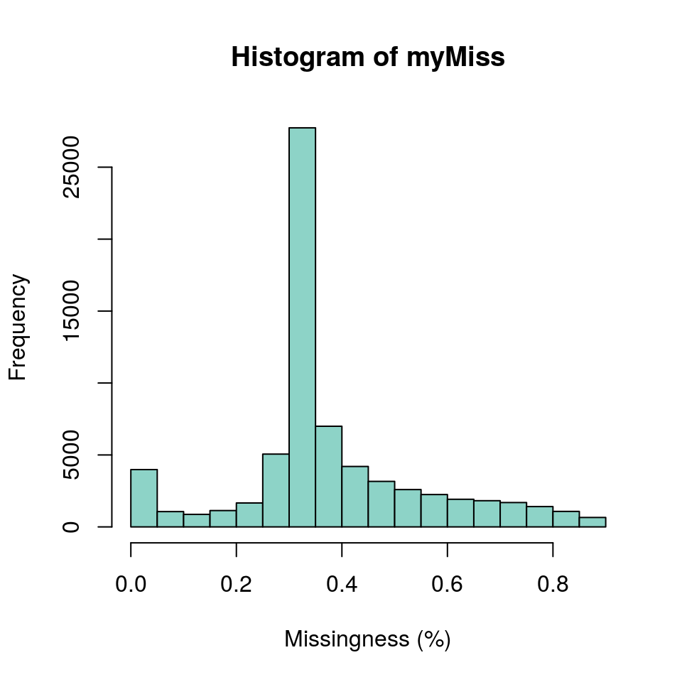

As the size of our dataset grow in terms of samples and variants the size of our data matrix grows. As the size of our data matrix grows it also increases the opportunity to have missing data. Also, some of our quality filtering steps increased the degree of missingness in our data matrix by setting values that we determined to be of unusual quality to NA. One way of managing missing data is to use imputation, a set of methods that attempts to infer what the most likely genotype should be and replaces the missing genotype with the interpolated genotype. However, if your data has a large degree of missingness you may want to attempt to mitigate missingness instead of interpolation Or you may want to implement a mitigation step prior to interpolation in the hope that this will improve the performance of the interpolation. Missing data can frequently be due to samples (columns) or variants (rows) of low quality. Here we demonstrate how to identify samples and variants in the data set that have a high degree of missingness. In another section we’ll show how to omit them.
A first perspective on how complete our dataset is can be provided by the show method for the vcfR object. When you invoke the name of an object with no arguments it invokes the show method.
vcf## ***** Object of Class vcfR *****
## 61 samples
## 7171 CHROMs
## 69,296 variants
## Object size: 46.5 Mb
## 37.62 percent missing data
## ***** ***** *****The show method for an object typically reports a summary of what is contained in the object. Here we see the number of samples and variants in our data. We also see a report of what the percentage of missing data is in our object. In the context of vcfR this is the proportion of variants scored as NA. Note that if a variant includes some data associated with a missing genotype it will not be recognized as missing. For example, a missing genotype could be associated with a depth information as follows.
GT:DP ./.:1Because this variant does include some data it will not be recognized as missing until the genotypes are extracted and queried for missingness. This means that the degree of missingness reported by the show method may be an underrepresentation. It does provide an easily accessed first perspective on the proportion of missing data. To determine the cause of this missing data (e.g., are there particular samples or variants of poor quality) we will look further.
To quantify missingness for a single sample we can use the function is.na(). This function uses a vector as an argument and returns a logical vector (TRUE and FALSE) indicating which values are NA. If we remind ourselves that TRUEs and FALSEs are numerically encoded as ones and zeros it reminds us we can take a sum of this logical vector to determine the degree of missingness.
as.numeric(TRUE)## [1] 1sum(is.na(dp[,1]))## [1] 11725This reports the number of missing variants in the first sample. We could similarly count the number of missing samples from a variant by accessing a row instead of a column. We could also convert this to a percentage by using length() to determine the total number of values in either the column or row and use this as a denominator.
This is illustrative of what we can accomplish for a single sample or variant. We typically have many samples an tens of thousand (or more) variants. We can extend the functionality of the above example to many columns or rows by using the apply() function. See the section on apply if you are unfamiliar with this function. Because we will be summarizing many samples we will use a barplot to visualize the results as opposed to trying to scrutinize the numerical information.
myMiss <- apply(dp, MARGIN = 2, function(x){ sum(is.na(x)) })
myMiss <- myMiss/nrow(vcf)
library(RColorBrewer)
palette(brewer.pal(n=12, name = 'Set3'))
par(mar = c(12,4,4,2))
barplot(myMiss, las = 2, col = 1:12)
title(ylab = "Missingness (%)")
par(mar = c(5,4,4,2))We see that there are two classes of samples. The samples with long names have a high degree of missingness (around 80%) while the samples with short names have a relatively low degree of missingness.
We can do something similar to query the variants (rows) for missingness. However, our dataset has over 60 thousand variants, so we wouldn’t want to visualize this with a barchart. It would require a barchart with 60 thousand bars. Instead of usung a barchart we’ll use a histogram.
myMiss <- apply(dp, MARGIN = 1, function(x){ sum(is.na(x)) })
myMiss <- myMiss/ncol(vcf@gt[,-1])
hist(myMiss, col = "#8DD3C7", xlab = "Missingness (%)")
We’ve now seen how we can create summaries of our data matrix over both rows and columns. Once we have this knowlege in hand we may develop a plan for managing this data. Future sections will provide examples of mitigating data that has been determined to be undesireable.
Copyright © 2017 Brian J. Knaus. All rights reserved.
USDA Agricultural Research Service, Horticultural Crops Research Lab.